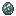

Cerâmica
Argila é um material incrivelmente útil e equilibrado que pode ser usado para cerâmica. Pode ser um desafio para localizar a princípio. A argila é geralmente escondida pela grama, mas geralmente é encontrada em dois locais. Em áreas com pelo menos 175mm Chuvas anuais, argila pode ser encontrada em patches em todo o lugar, geralmente marcada pela presença de certos Plantas.
Indicadores de argila
Multibloco
Argila, com uma das plantas que podem indicar sua presença.
Athyrium longe, , Goldenrod, Grama de pampas, Perovskia, e Canna de água Todos indicam a presença de argila nas proximidades. A argila também pode ser encontrada em depósitos menores próximos a fontes de água, como rios, lagos ou lagoas.
Como nas rochas, a argila pode ser usada para formar novos itens. Requer cinco argila na sua mão para remar. Ao contrário das rochas, se você cometer um erro, poderá simplesmente fechar o knapping interface, remodelar seu barro e tente novamente.
A Knapping Interface.
Small Vessel
A pequena vessel é um desses itens. Como todos os itens de cerâmica, deve ser despedida antes que possa ser usado. Disparar é um processo de aquecimento o item até um ponto em que a argila se transformará em um difícil Cerâmica material, que requer aquecimento a 1200 ° C, ou Amarela.
Para fazer isso no início do jogo, você precisará usar um Forno do poço.

Knapping a Clay Small Vessel.
Large Vessel
The Large Vessel is created in a similar way. It can be placed, and has nine slots for items. View the linked chapter for more information.
Knapping a Clay Large Vessel.
Jug
Outro item útil de cerâmica é o Jug. Pode ser usado para pegar e bebida Fluidos, como água doce.
Para usá -lo, simplesmente Clique Direito O jarro sobre o fluido do mundo. Em seguida, use o jarro para beber dele. O jarro pode segurar 100 mB de fluido de cada vez.

Knapping a Clay Jug.
Moldes
Argila também é necessária para fazer Moldes. Os moldes podem ter o metal fundido derramado neles, o que acabará se solidificando na forma de um molde. O item e potencialmente o molde podem ser recuperados usando Clique Direito no molde.
O tipo mais simples de molde é o molde de lingote, à direita.
Knapping a Clay Ingot Mold.


Branco Amarelado****
O molde então precisa ser disparado, como todos os itens de argila, para ser utilizável - provavelmente em um Forno do poço.
Uma vez que é disparado, o metal fundido pode ser derramado. Depois que o metal esfriar o suficiente, ele pode ser extraído.
Elenco
Itens: tfc:ceramic/ingot_mold[tfc:fluid={id:"tfc:metal/copper", amount:100}]
As próximas páginas mostram vários dos padrões de troca de várias ferramentas.
Uma Escolha do prospector é uma ferramenta essencial para localizar grandes quantidades de minério.
A Picareta! A ferramenta de pão e manteiga para mineração.
A Serra é uma ferramenta necessária para criar componentes avançados de madeira como um Bancada de Trabalho junto com muitos outros dispositivos como Apoia.
A Enxada é uma ferramenta que pode colher plantas e folhas em uma área de 3x3x3!
A Formão é uma ferramenta usada para suavizar blocos, além de criar um grande número de blocos decorativos.
Um Machado Para todas as suas fins de corte de árvores. Observe que os eixos de pedra são menos eficientes que o metal!
O Martelo é uma ferramenta essencial para criar e trabalhar em Anvils.
A Faca pode ser usado como arma ou como uma ferramenta de corte para blocos de tipo de planta.
A Enxada usado para plantar e manter Plantações.
A Pá Para todos os seus fins de escavação.